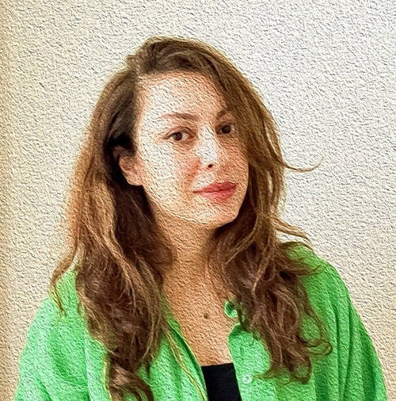
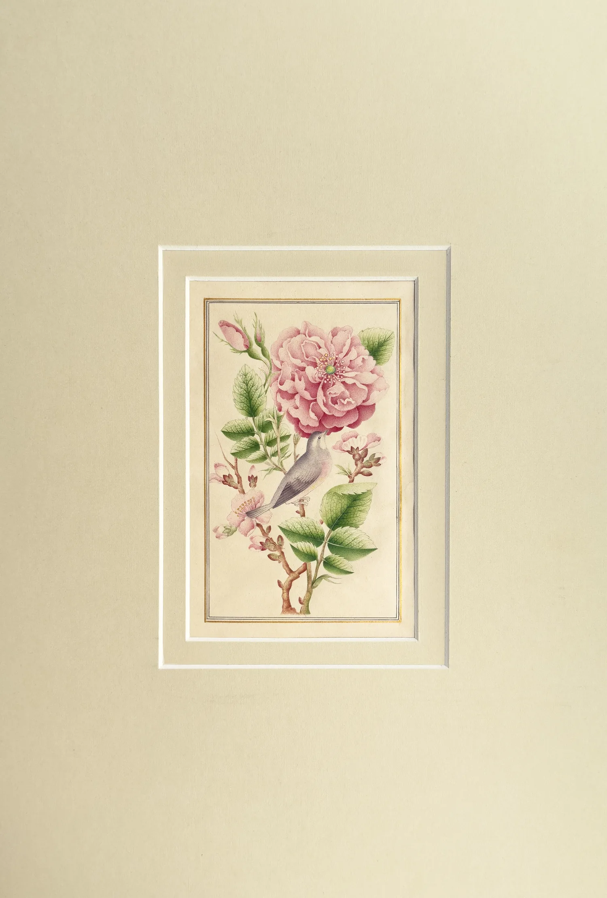

The Artist
About Matin

Biography
Matin Zayerebrahimi, an Iranian artist born in 1987, began her artistic journey with painting during her teenage years. Alongside her deep passion for art, she pursued formal studies in the arts at specialized art schools and universities in Iran. Today, Matin divides her time between Iran, her homeland, and Dubai, continuing her work through workshops, art classes, and exhibitions. As an artist and researcher, Matin has dedicated a significant part of her practice to sharing knowledge through teaching, especially holding workshops for both adults and children.
Throughout her journey, Matin has explored a wide range of mediums and techniques that have enriched her artistic voice. Early on, she experimented with printmaking — designing and carving wood and linoleum blocks, then inking and printing them onto fabric or paper. She also created textured prints using molten bitumen, developing unique surfaces that brought depth to her works. Her love for texture extended into hand-crafted poster design, logo and symbol design, and, for a period, analog photography — capturing images on film and developing them in a traditional darkroom. These diverse experiences all contribute to her multi-layered approach to art-making today.
After exploring various painting styles, Matin has devoted recent years to focusing primarily on traditional Iranian painting — especially Negārgari (miniature painting) and visual elements inspired by Iranian culture and history. Her works strive to depict the lesser-seen or sometimes forgotten beauty of Iranian heritage and to create a visual dialogue with audiences around the world.
Matin believes that art can be a bridge between cultures. In her recent projects she seeks a deeper understanding of the histories of other countries and integrates these influences with Iranian painting — beginning with neighbouring Arab nations such as Oman and the UAE, and extending her research to India, China, and Turkey, recognising the rich history of artistic exchange in miniature painting between Iran and these countries.
In her own words
Artist Statement
As an artist deeply interested in Persian miniature art, my work focuses on two main styles: Gol-o-Morgh (Flowers and Birds), inspired by the colours and delicacy of nature, and the Isfahan school, one of the prominent branches of Persian miniature. These styles, with their vibrant colours and intricate details, captivate me through their aesthetic appeal and their historical significance in decorating manuscripts and architectural spaces.
Initially, during my studies in graphic design and visual art, I was drawn to abstract painting, but over time my interest in detailed patterns and delicate motifs led me to the world of Persian miniature. What fascinates me about this art is the combination of its visual beauty and the spiritual depth derived from the mystical philosophy of Iran. This depth is poignantly reflected in Gol-o-Morgh artworks, symbolising love and harmony: the flower represents the beloved, while the bird symbolises the lover.
In creating my pieces, I use handcrafted ultra-fine brushes made from cat and sable hair, applying colour in delicate lines and dots on handmade Aharmehreh paper. Due to the meticulous technique and intricate design, each piece takes approximately two to three months to complete. This process feels meditative and calming. The colours I use are watercolours made from natural materials, giving the artworks long-lasting vibrancy. Upon completion, I present each painting with precisely cut passe-partouts and simple wooden frames to protect its elegance.
Ultimately, my goal is to preserve the authenticity of this ancient art while expanding its boundaries through exploration and creativity — applying traditional techniques to unconventional materials such as wood, and integrating this style with illustration, abstraction, and collage. My artworks are an effort to share my inner world and the rich culture and art of my country, all while finding joy in working with colours and crafting intricate details.

Curriculum Vitae
Selected History
Matin Zayerebrahimi
Born Isfahan, Iran, 1987 · Lives in Isfahan, Iran